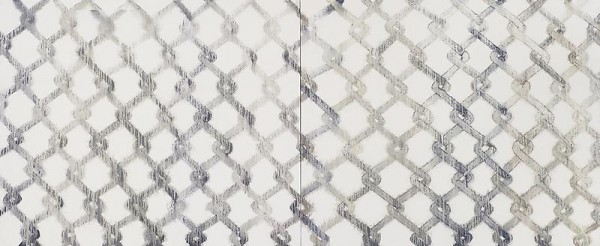

-
They are here, tight like a boot.
by Zak Kitnick January 22, 2011
Tony Feher at The Pace Gallery
Colored liquid contained by vinyl tubes fills the space.
The predetermined food coloring palate adds to a sense of containment.
An unexpected leak from the ceiling steals the show.Untitled (Painting) at Luhring Augustine
When low-tech problems produce high-tech solutions, there is nothing worse.
But when simple processes produce complex results, there is nothing better.
Bernard Frize’s sprayed acrylic lines on canvas have an inexplicable
and disorienting effect unlike anything I have ever felt.Amnesia at Andrea Rosen
Never has symmetry been such a perfect and potent tool.
On Kawara date paintings with their corresponding boxes and newspapers
mirror monitors and stools on the opposite wall playing a selection of videos.
The space between feels laced together, tight, like a boot.John Stezaker at Friedrich Petzel
These untitled black and white works on linen,
might as easily have been the postscript to the more recognizable collage magazine pages.
But as precursor, they are more lovable.
If you’re never seen a Stezaker over 8.5×11, or before 2000, they are here.
Jacob Kassay, Robert Morris, Virginia Overton at Mitchell-Innes & Nash
Make a white painting, use a fluorescent light, do site specific.
In 2010 these actions point to their own sustained potential
(and possibly of the artists that employ them.)
Virginia Overton’s Douglas fir works use space as found material.Martin Boyce at Tanya Bonakdar
The press release deciphers the scattered steel letters on wall mounted slabs as saying, “empty pools,” “undisturbed air,” and “remembered skies.”
Whether these are or are not the lyrics to a Pavement song is debatable.
The wood grain on concrete panel looks like other art that’s interested in architecture.David Miko and Tom Thayer’s New World Pig at The Kitchen
In Albert Oehlen’s Untitled (9 1/2 weeks) a couple blocks north at Green Naftali,
the artist projects Adrian Lyne’s 1986 film on a painting,
but in this well-lit room the painting is king.
Given the nature of the paintings and videos, in Miko and Thayer’s work it is impossible to distinguish between the two without stepping in front of the projector.
Made ‘separately but in tandem’ seems like a good way for these to have happened.
Kai Althoff at Gladstone
It smells like Althoff might have smashed the remaining bottles of his Parkett edition in the corner and sprayed a stronger fragrance over that.
Or somebody was wearing strong perfume.
Also the floors were yellow and the ceiling was lower.